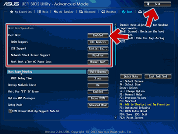

Fast Bootについて
※手順だけ知りたい場合は読み飛ばしてOKです。
■ 機能
PCの電源を入れた時や、Windows を再起動した際に、BIOSレベルのドライバ初期化を最小限にとどめ、PC起動時のPOST通過にかかる時間を短縮する機能です。
■ 作動条件
Fast Boot の機能は、Windows が UEFI (GPT) 形式でインストールされていなければ有効に作動しません。
Windows を UEFI (GPT)形式でインストールするには、一部のメーカー製PCを除き、64bit版のOSが必要。
■ 対応OS
Fast Bootの機能を十分に発揮させるためには、Windows 8 以降を使う必要があります。Windows 7 マシンの場合でも、Fast Boot は 作動しますが、Windows 8 以降ほど早くはなりません。
(Windows8 以降を使うと、UEFI の専用領域を利用してさらに高速な起動ができる。)
※さらに詳しいお話はググってください。
Windows 10/8.1 で UEFI画面に入る方法
Fast Boot を 無効にするには、PCのUEFI画面に入る必要があります。
UEFI 画面に入るには、通常は以下の手順が必要になります。
補足説明
● 最近のPCは、PC 起動時に F2またはDELキー でUEFI 画面に入れないようになっています。
● F2またはDELキー でUEFI 画面に入れるPCの場合、以下の手順は不要です。
● また、以下の手順で FastBoot の設定を無効化した後は、F2またはDELキー でUEFI 画面に入れるようになります。
■ まずはWindowsを起動した状態で操作します。
1.「スタートボタン」を押す
2.「設定ボタン」を押す
3.「更新とセキュリティ」を押す
■ 次に出た画面で、以下の操作を行います
4. 左側のメニューで「回復」を選択
5.「PCの起動をカスタマイズする」の「今すぐPCを再起動する」
ここまでの手順を行うと、PCが再起動されます。
Fast Boot の無効化は、PC再起動後のUEFI画面で実行します。
■ 再起動後の手順
● 「オプションの選択」画面が表示されます。
「トラブルシューティング」を選択します。
● 「トラブルシューティング」画面

「詳細オプション」を選びます。
● 「詳細オプション」画面
「UEFI ファームウェアの設定」を選びます。
以上の手順でPCが再起動され、UEFI画面が表示されます。
※画像は ASUS P9X79 Deluxe の UEFI画面。
※UEFI画面はマザーボードのメーカによって異なります。
UEFI画面が表示された後は、Fast Bootの項目を探して現在の状態をチェックし、必要に応じ設定を変更します。具体的な手順は、以下になります。
FAST Boot を無効化する／状態をチェックする
FAST Boot の設定は、通常は UEFI画面の「Boot」タブ内で確認できます。
以下、3つほど設定例を示しておきます。
■ ASUSマザーの場合 ※ASUS P9X79 Deluxe
1. 「Boot」タブを選択
2. Fast Boot････Disabledにする
※補足
この項目Enabled にしていても、「USB Support」や「PS2 Device Support」を「Disabled」にしていればPOST時のキー入力は受け付け可能。
■ AsRockマザーの場合 ※AsRock Fatal1ty Z87 Killer
1. 「Boot」タブを選択
2. Fast Boot････DisabledまたはFast bootを選択する
※Ultra Fast Boot 以外はPOST時キー入力可能
■ メーカー製PCの一例 ※FMVW77MWG (intel HM86 Express)
1. 「詳細」タブを選択
2. 高速起動････使用しないを選択
※マウス操作不能。キーボード操作のみ。
■ 重要:設定変更のUEFIの終了方法
上記の設定が終了した後は、設定を保存したうえでPCを再起動します。
※以下画面はASUS P9X79 Deluxeのもの。
「Exit」または「終了」タブに移動し、「Save & Exit」や「Save Changes and Reset」などを選びます。
PCが再起動され、設定変更が反映されます。
注意事項
このページの手順とは逆に、Fast Bootを無効から有効にしたい場合は注意が必要です。
Fast Bootを有効にする場合、以下の条件を満たしておく必要があります。